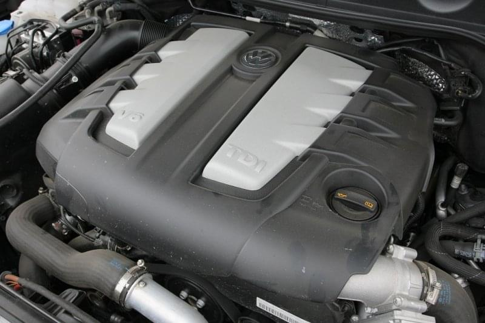

9 простейших рекомендаций которые не позволят «загубить» дизельный двигатель
Знание правил эксплуатации дизельного двигателя позволит исключить критические поломки силовых агрегатов, а автомобиль прослужит как можно дольше, не требуя при этом каких-либо серьезных и дорогостоящих ремонтных работ. Поговорим поподробнее о том, как не убить неправильной эксплуатацией дизельный двигатель.
Простейшие рекомендации
Чтобы исключить серьезные поломки дизельного двигателя автовладельцу необходимо придерживаться следующих простейших рекомендаций:
- своевременно менять масло;
- правильно использовать присадки;
- избегать гидроудара двигателя;
- контролировать состояние свечей зажигания;
- правильно ухаживать за радиатором охлаждения;
- своевременно менять ремень газораспределительного механизма;
- использовать исключительно качественное топливо;
- менять вовремя антифриз;
- проверять состояние и менять воздушный фильтр.
Часто автовладельцы забывают о необходимости замены расходников, выполняя их замену по остаточному принципу или же при появлении у двигателя уже серьезных неисправностей. Помните о том, что экономить на обслуживании мотора не следует, это предупреждает серьезные неисправности, избавляя от необходимости преждевременного ремонта двигателя автомобиля.
Правильно проезжаем глубокие лужи
Глубокие лужи на дороге не только могут привести к аквапланированию автомобиля, но и грозят нам гидроударом мотора. Если вода попадет в заборную трубу для воздуха, то подобное грозит серьезными проблемами для двигателя авто. Поэтому старайтесь держаться подальше от таких глубоких луж, а если вами неизвестен тот или иной участок дороги, всё же стоит либо воздержаться от такой поездки, либо перед тем как начать форсировать лужу проверить её глубину.
Правильное использование присадок
На сегодняшний день нет единого мнения о необходимости использования присадок в топливо или масло. Если водитель всё же решается использовать такую автохимию, нужно помнить о том, что она должна быть обязательно качественной, что и позволит избежать различного рода проблем с двигателем автомобиля.
Использование качественного топлива
Если автовладелец заливает в бензобак не слишком качественную солярку, в конечном счете, это приводит к загрязнению топливной системы, требуется вскрывать мотор и выполнять его капитальный ремонт. Поэтому возьмите себе за правило, использовать исключительно качественное топливо, нужно заправляться лишь на строго определенных заправках, в качестве предложения которых вы полностью уверены.
Своевременная замена масла
Многие забывают, что на дизельных двигателях масло нужно менять чаще, чем на бензиновых моторах. Объясняется это тем, что в дизельном топливе содержится больше сажи и других включений, которые неизменно оказываются в масле и приводят к его быстрому загрязнению и потери своих эксплуатационных характеристик. Поэтому, чтобы избежать критических неисправностей автомобиля, следует менять моторное масло каждые 5-7 тысяч километров пробега.
Обслуживание системы охлаждения
Если пренебрегать обслуживанием системы охлаждения и не чистить радиатор, это приводит к постоянному перегреву двигателя, что, в конечном счете, вызывает преждевременный износ и серьезные неисправности. Необходимо будет раз в 1-2 года выполнять мойку радиаторов, обязательно менять антифриз, при необходимости проводить другое обслуживание системы охлаждения двигателя автомобиля.
Подведём итоги
От правильности эксплуатации автомобиля с дизельным двигателем будет зависеть отсутствие критических поломок силового агрегата. Необходимо своевременно менять моторное масло, обслуживать систему охлаждения, заливать в бензобак исключительно качественную солярку, а также крайне аккуратно преодолевать глубокие лужи, что исключает получение гидроудара мотора.